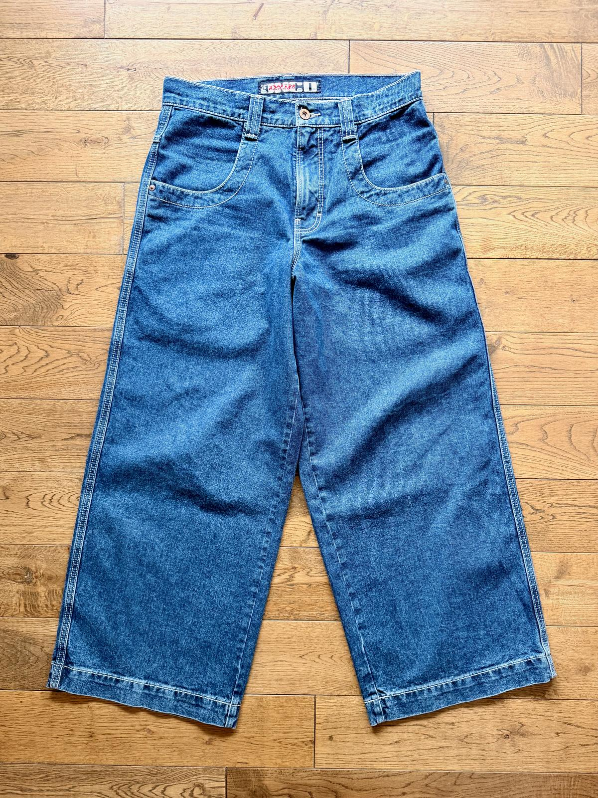
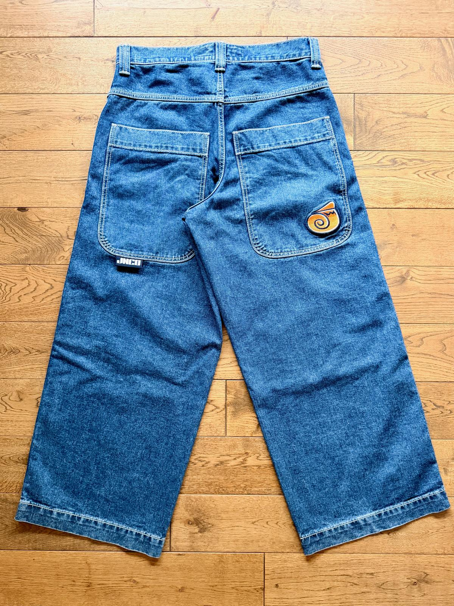
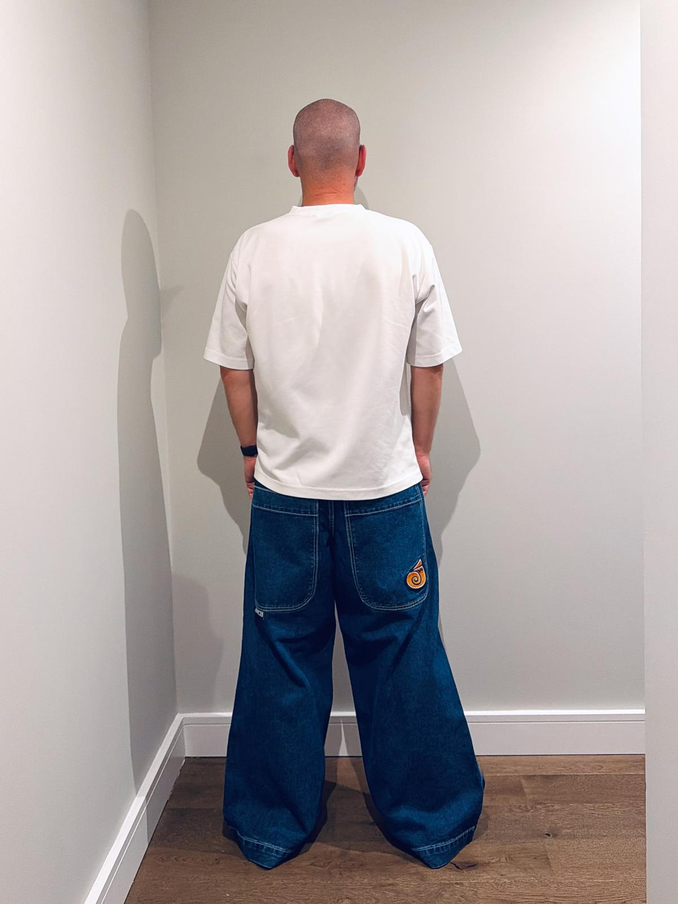
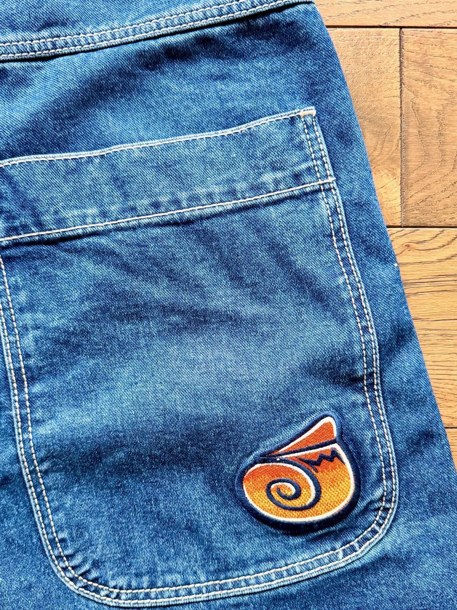

This was my first pair of JNCOs and the start of my collection.


They’re one of the most mainstream JNCOs available, and they’re really easy to wear. With 26” leg openings, these are basically just baggy jeans at the top end (or just slightly beyond) of the scale of the mainstream trend for baggy jeans. They feel great and look great, even if (or maybe because) they aren’t that extreme.

The embroidery on the back pocket is perhaps a little bit meh compared to other models, but that also makes them relatively discreet.
